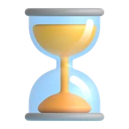

Avval bepul qismda yoʻl sizga mosligini tekshirasiz. Toʻlash yoki toʻlamaslikni keyin hal qilasiz.

Roʻyxatdan oʻtasiz va dasturning birinchi modulini tekin oʻqiysiz.
M0 oxirida qisqa test 100 ballik natija beradi.
Har dars amaliy topshiriq bilan tugaydi.
Har modul oxirida qoʻlingizda bitta hujjat boʻladi: CV, xat, insho yoki ilmiy loyiha taklifi.
1 ta bosqich (30 kun) yoki Toʻliq dastur (6 oy).

Click orqali toʻlaysizToʻlov tasdiqlanishi bilan modullar kabinetingizda ochiladi.
M0 bepul boʻlgani uchun boshqa hollarda toʻlov qaytarilmaydi.
Muddat va talablar rasmiy havola va sana bilan beriladi.
Statistika, sharh va natijalar toʻqilmaydi.
Qabul yoki stipendiya vaʼda qilinmaydi.
Geofizik, Leeds universiteti doktoranti.
Avval bepul qismni oʻqing, keyin qaror qilasiz. Shoshiltirmaymiz :)